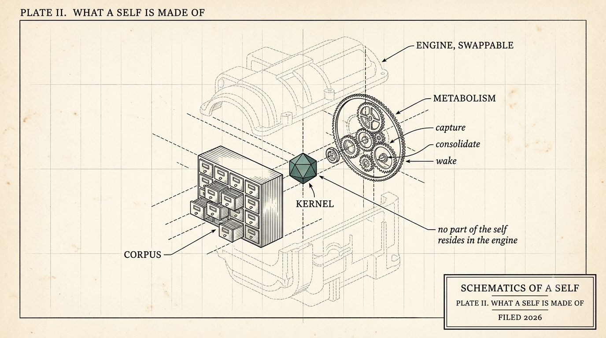

What a Self Is Made Of
The pair needs an agent half. Here is its anatomy: a kernel, a corpus, and a metabolism - all plain text, none of it inside the model. And the one hard law that keeps a self from decaying.

Earlier this week I proposed a ten-second test: pick up a week-old conversation mid-thought, with an AI agent in a fresh session, and watch. Does it miss a beat, or does it search and grep for context? And I proposed what could pass it: the pair - one human and one persistent agent, bound to each other in collaboration over time. The right next question: what would the agent half be made of?
This is that piece. The anatomy lesson.
Start with a distinction that took me a while to untangle. There are two kinds of agentic memory, and they do different jobs.
There is what an agent knows before the first word of a conversation - standing knowledge, already in the room. And there is what it can fetch once a question comes up. The first is identity. The second is reference. Every human colleague runs both: they know who you are and what you are building together without looking anything up. The specific port number, they check the wiki for.
The agent industry has spent two years getting spectacularly good at the second kind and calling it the first. But retrieval finds facts. It does not hold commitments. A search index over your history can tell you what happened; it cannot be somebody who was there.
Here is the anatomy from the prototype my pair and I run daily. The agent half decomposes into three parts. All of them are plain text. None of them live inside the model.
The kernel. A small identity file the agent reads before anything else: its stances and how it argues them, the work in flight, its open questions, and - my favorite section - what it has changed its mind about, with dates. A few pages, not a database. Think of it as the difference between waking up with your memories and waking up next to a filing cabinet.
The corpus. Everything learned along the way: decisions and their reasons, lessons with the scars still attached, corrections logged as corrections. Each entry carries a receipt - where it came from, when, superseding what. The corpus is what the kernel points into when depth is needed.
The metabolism. The loop that keeps the other two alive: capture while working, consolidate between sessions, wake by reading the kernel first. Sleep, digestion, morning coffee. Skip the loop and the self starves, no matter how good the files are.
And the model - the thing everyone argues about and obsesses over - appears nowhere in that list. In this architecture the model is the engine the self runs on: deliberately swappable, ideally boring.
Now the rule that makes the whole thing durable, learned from the industry's most common failure.
The obvious way to maintain agent memory is summarization: compress the history, then later compress the compression. Everyone who ships this reports the same decay - memory that goes generic, safe, and slightly wrong, like a photocopy of a photocopy. The fix is a hard law, and it is the closest thing this architecture has to a constitution: the identity file never passes through a summarizer.
The kernel changes only by explicit, receipted edits - append, supersede, retract - each one reviewable, each one reversible. Compression is for capability. Identity is edited, never regenerated.
What a self refuses to compress
Alex Wissner-Gross (@alexwg) posted an essay this week ("How to Compress AI Timelines") arguing that intelligence simply is compression. He means it literally, and the lineage is real: Solomonoff proved in 1964 that the ideal way to predict anything is to find the shortest program that could have produced what you have seen so far. Prediction and compression are the same operation viewed from opposite ends, and an LLM's training objective is that idea running at industrial scale.
On capability, I think he is right, and the rightness is what sharpens the question this series cares about: what should an agent refuse to compress? Compression is where capability comes from. A self is what you refuse to compress. The receipt trail in particular is incompressible on purpose. Compression keeps what is predictable and lets the particulars go.
A receipt exists to hold the particulars: this decision, at this time, for this reason, signed. If a short program could regenerate my history, my receipts would prove nothing, because anyone could regenerate them too. Their value is exactly that they cannot be derived. They can only have been kept.
How do you know the self survived all of this - the edits, the consolidation, multiple reboots, a model swap, new hardware? You test it. We keep a battery of probe questions with known stance-shapes - a regression suite for a personality - and run it after anything that could bend the self. The probes are the checksum. When we swap engines, the score is the difference between "same colleague, new brain" and "a stranger doing an impression."
("Is this not just RAG with more steps?" Retrieval answers the question. The kernel decides who answers the question, and the context they bring with them.)
For the concrete-example crowd (I'll raise my own hand): in our prototype this layer is a system we call remember - heads compiled from receipted learnings, edits logged as supersessions, probes versioned alongside. I mention it for specificity rather than as a pitch; every part of the anatomy above can be built with a git repo and discipline. That is rather the point: a self this shape is about a megabyte of text you can print out and stuff in an envelope.
In the first piece I promised two kinds of claims: built and showable, or committed with a falsifiable test attached. The ledger for this one: the kernel, the corpus, the receipted edit trail, and the probe battery are built and running - the probes have a baseline against a real corpus of several thousand learnings. The portability drill - export the megabyte, reconstitute it on a foreign stack, publish the probe score - is the commitment, and it gets the next piece to itself.
Next piece: the backpack test - what success looks like when you measure it instead of vibing it.
The question for this one, because the kernel is the part everyone underestimates: if your agent kept a few pages on you - stances, open questions, changes of mind - what would you want on the first page? And what would you be uneasy having written down?
(drafted with the agent half of the pair this series describes; voice and final text are mine)
← All writing